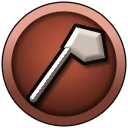

Alliance
Wight
A race alliance of 6 units with steps at 2, 4 and 6.
Heartless dead whose presence rots iron. All enemies lose armour.
Wight is a race alliance carried by 6 units. It has 3 steps, reached with 2, 4 and 6 different Wight units on your board. See How alliances count for how units are counted.
Steps
| Units needed | What it grants |
|---|---|
| 2 | All enemies: -4 armour. Enemies summoned later in the fight get this too. |
| 4 | All enemies: -9 armour. Enemies summoned later in the fight get this too. |
| 6 | All enemies: -15 armour. Enemies summoned later in the fight get this too. |
- Only the highest step you have reached applies. Each step states its full effect; steps do not add together.
Units (6)
Tier 1: Common (2)
Tier 2: Uncommon (1)
Tier 3: Rare (1)
Tier 4: Epic (1)
Tier 5: Legendary (1)
Pairs well with
Every alliance that shares a unit with Wight is listed here. A shared unit counts toward both alliances at once, so fielding it moves both closer to a step. The Alliance matrix shows every overlap.
| Alliance | Kind | Shared units | Its steps | Units in both |
|---|---|---|---|---|
 Soulbinder Soulbinder | Class | 2 | 2 / 4 / 6 |  Plague Cantor Plague Cantor Soul Tyrant Soul Tyrant |
 Swarmkin Swarmkin | Race | 2 | 2 / 4 |  Pit Imp Pit Imp Gnawing Wight Gnawing Wight |
 Abyssal Abyssal | Race | 1 | 1 / 2 | Pit Imp |
| Mender | Class | 1 | 2 / 4 | Plague Cantor |
 Ravager | Class | 1 | 2 / 4 | Gnawing Wight |
 Stalker Stalker | Class | 1 | 3 / 6 |  Grave Archer Grave Archer |
 Warden Warden | Class | 1 | 3 / 6 |  Chainwarden Chainwarden |
 Watcher Watcher | Class | 1 | 2 / 4 | Chainwarden |
How it counts
- Only units on your board count. Units on the bench do not.
- Each different unit counts once. Two copies of the same unit count as one, and star level makes no difference.
- Summoned units never count.
The full rules are on How alliances count.